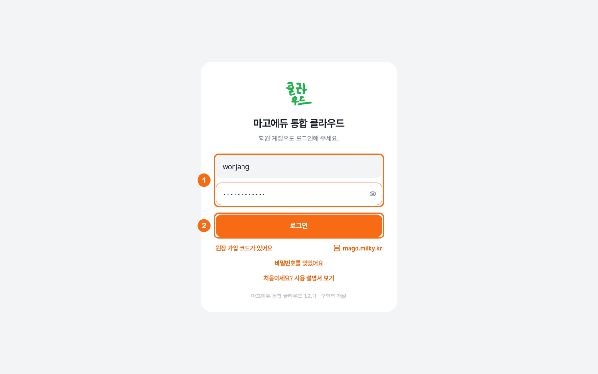
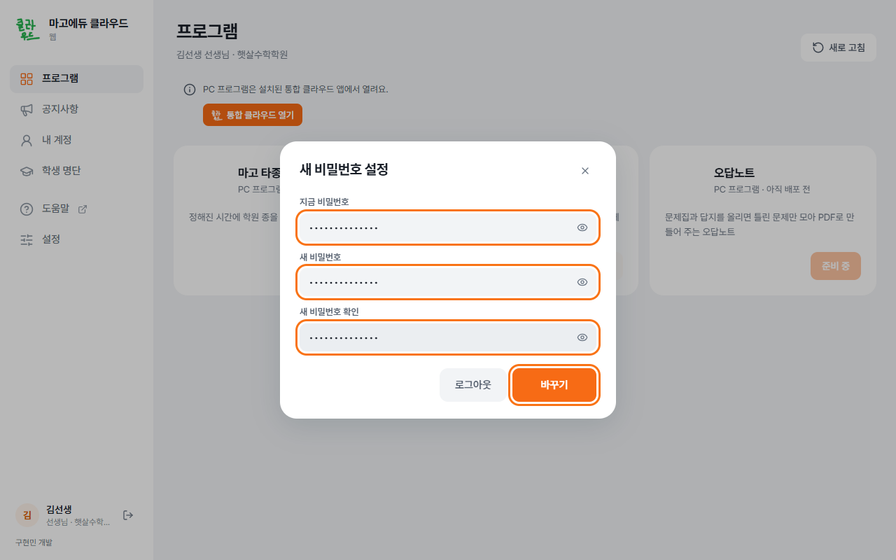

선생님용 안내
원장에게 받은 계정으로 로그인하고 학원 자료를 사용합니다.
처음 한 번 준비하기
- 원장에게 계정을 받습니다.
아이디와 임시 비밀번호를 받습니다. 원장 가입 코드는 선생님 계정에 사용하지 않습니다.
- PC에 통합 클라우드를 설치합니다.
mago.milky.kr의 Windows 프로그램 내려받기로 설치 파일을 받습니다. 설치 순서
- 로그인합니다.
PC에서 마고에듀 통합 클라우드를 열고 아이디·임시 비밀번호를 입력한 뒤 로그인을 누릅니다.

통합 클라우드 로그인 화면 - 비밀번호를 변경합니다.
새 비밀번호 안내가 나오면 임시 비밀번호와 새 비밀번호를 입력하고 바꾸기를 누릅니다.

첫 로그인 비밀번호 변경 - 프로그램을 설치하고 엽니다.
에서 카드의 설치를 누릅니다. 설치가 끝나면 열기를 누릅니다. 카드가 없으면 원장에게 권한을 요청합니다.

프로그램 목록
다음부터는 통합 클라우드에서 엽니다.오답노트·타종 실행 파일을 직접 실행하지 않습니다.
자주 하는 일
학생 시험지 만들기
- 책을 준비합니다.
책장에 문제집·답지를 등록하고 분석합니다. 공유된 책은 다시 등록하지 않습니다.
- 학생과 번호를 선택합니다.
새 오답노트에서 학생·책을 고르고 틀린 문제 번호를 누릅니다.
- 시험지를 만듭니다.
시험지로 내보내기에서 PDF 또는 한글 문서로 저장합니다. 학생에게 답지를 보여 주려면 학생에게 답지 보여 주기를 켭니다.
수업 시간표 변경
마고 타종의 에서 일정을 추가하거나 수정합니다. 시간표 관리
선택한 세트가 실제 타종에 적용됩니다.변경한 뒤 에서 다음 종을 확인합니다.
학생 과목 설계
과목내비에서 학생 → 학교 → 분야 → 대학 → 조건 → 결과 보기 순서로 진행합니다. 과목내비 사용법
학생 명단·계정 관리
통합 클라우드 에서 학생과 담당 선생님을 관리합니다. 계정은 초대 코드 또는 아이디·임시 비밀번호로 만듭니다. 학생 명단·계정 관리
비밀번호 변경
통합 클라우드 에서 비밀번호 바꾸기를 누릅니다. 비밀번호를 잊었다면 원장에게 초기화를 요청합니다.
현재 화면의 설명서는 왼쪽 위의 도움말에서 엽니다.